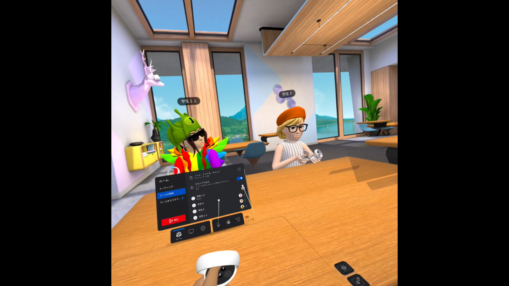

第2週目
2-1 １週目のレポートをHTMLで作る
１週目のレポート
1.内容
スクラッチやGithubを授業で扱った。
2.感想
スクラッチでは簡単にプログラミングができ、パソコンを使うのがあまり得意でない私でも楽しむことができた。Githubでhtmlについて少し学ぶことができた。
2-2 機械学習体験
1.内容
teachable machine を用いてグー、チョキ、パーの判別の体験をした。
2.感想
サンプルに自分の顔が映っているかいないかでもグー、チョキ、パーの判別がされた。そのため、判別対象のみが映っているサンプルを撮影しなければ正確な判定はできないなと感じた。
グーを出していても、チョキやパーの要素が入っていいたので面白いなと思った。
2-3 VR（バーチャルリアリティー：Virtual Reality）会議室の体験

1.内容
Meta Quest2 を用いて、VR体験をした。
2.感想
画質がとてもきれいで、第２の世界に入ったようでとても楽しかった。
VRの世界の中で離れたところにいる人とも話すことができたので、家にいるときでも友達と遊んだり、リモートワークにも使えたりできると思った。